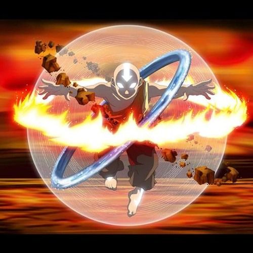

Aang
Aang was born to two Air Nomads in 12 BG. After selecting the Avatar relics from among thousands of toys, thereby inadvertently confirming his identity as the Avatar, he was taken away by the monks of the Southern Air Temple, who kept his position a secret from him. As an Air Nomad, Aang traveled extensively around the world. During his childhood, Aang was housed, raised, and educated at the Southern Air Temple, under the guardianship of monk Gyatso, who served as his father figure, counselor, and tutor. After some time, he and several other young Air Nomad boys were taken to the Eastern Air Temple, where they each chose a sky bison as their lifelong companion. Aang approached his soon-to-be sky bison Appa and offered him an apple, which Appa accepted, thus marking the start of their deep and lifelong friendship.
Aang was always able to excel at any new bending moves he learned; at the age of six, he was a better airbender than children twice his age, and by the age of ten, Aang had proven himself to be better than his own teachers. He earned airbending tattoos and the status of an airbending master by the age of twelve for exhibiting prodigious talent with his native element and with his invention of the air scooter, making him the youngest airbending master in Air Nomad history.
In his childhood, Aang also visited the other air temples, as evidenced by his obvious familiarity with the Western Air Temple, as well as cities in the Earth Kingdom, such as Omashu, where he developed a lasting friendship with the good-natured but eccentric Bumi. He bonded closely with children in the Fire Nation, like Kuzon, with whom he went searching for a dragon in the mountains and saved a dragon egg from poachers.
Due to the signs of a possible war approaching, Aang was told about his status as the Avatar at the age of twelve, four years earlier than the traditional age of sixteen. Aang felt burdened by his status as the other children refused to play with him anymore, and he came to spend more time practicing airbending with the monks. Monk Gyatso was the only one who showed an understanding of Aang's burden, having been good friends with Avatar Roku, Aang's past life, and tried to help ease Aang through the transition from childhood to adulthood by providing Aang with balance through fun during the upheaval in his life.
However, Aang later discovered that he would be sent to the Eastern Air Temple in order to complete his airbending training far away from Monk Gyatso, whom the other monks thought was too soft on him. Afraid and confused, the young airbender ran away with his flying bison, Appa, though they became caught in a storm shortly after, which caused them to crash into the water. Aang saved himself and Appa from drowning by semi-consciously entering the Avatar State and freezing them both in a sphere of ice through a combination of airbending and waterbending. The Avatar State kept him alive, albeit not fully conscious, in the iceberg for about a hundred years while the war raged on.
Bending the 4 elements
While all other benders can only bend one element, as the Avatar Aang is the only person that can learn to bend all 4 elements
Avatar State
The avatar state is a special ability that links the current avatar to each avatar that came before them. Activating it grants the current avatar all of their ancestors' knowledge and power, and makes you nearly unstoppable. The avatar state can be activated automatically as a defense mechanism in times of great stress, however, dying while in the avatar state would sever an avatar's attachment with their past lives.
Travel to the spirit world
Energy bending
Aang learns energybending from a giant lion turtle. It is the ability to bend the energy within a person. The ability is rarely learned or used because of it's capacity to kill the user. Using this ability successfully allows you to transfer knowledge, take away a person's ability to bend elements, or restore ability to bend elements.
Lured into traps easily. Doesn't know modern tech, customs, history etc.
- Avatar Roku
- Monk Gyatso
- Toph
- Master Pakku
- Jeong Jeong
- Guru Pathik